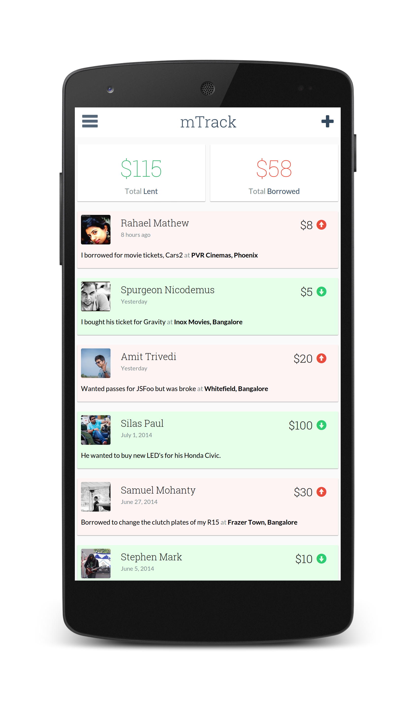
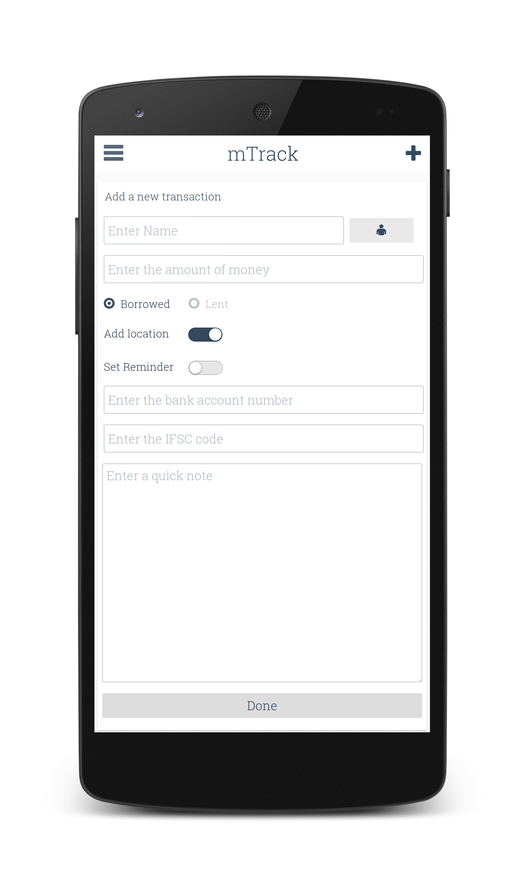

We all know what a hassle it is to manage tracking money that is lent or borrowed by us. "mTrack" is a mobile application design that attempts to ease this pain-point with a simple and elegant interface that summarizes every detail of a transaction in an intuitive way. This design is created using HTML, CSS and JavaScript which can be easily integrated with a working backend system. The home screen includes two KPI components to display the total money lent and borrowed. A list of cards are displayed on the same screen which displays all the details of a transaction in chronological order. Each card contains useful information like, the person who borrowed/lent, the amount of money, humanized date, location, a small note and whether money is borrowed or lent.
 {kind=link}
{kind=link}
Adding a new transaction is extremely easy, clicking the plus icon on the top right displays the form. The form lets you either type in a name or select a person from the phone's native contacts application. It also facilitates the option to create reminders for each transaction.
Another important feature of this app is being able to store the bank account details of the payee. While adding a new transaction, if the "borrowed" radio button is clicked, two new fields are added to the page.
1. Bank account number of the Payee
2. IFCS code of the bank.
This information comes in handy while making the payment back to your friend.
Clicking on done creates a new card that is pushed onto the application's home screen. Contacts and Reminder screenshots are taken from a stock Android phone.